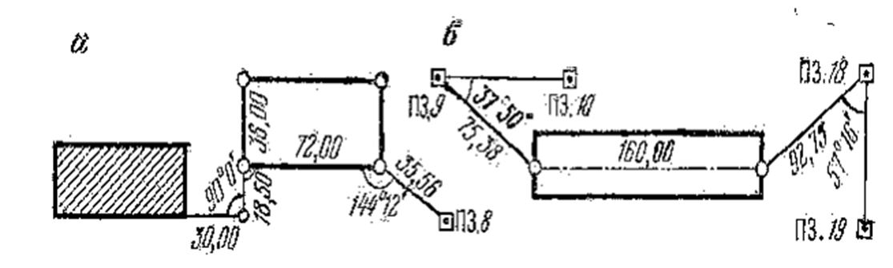
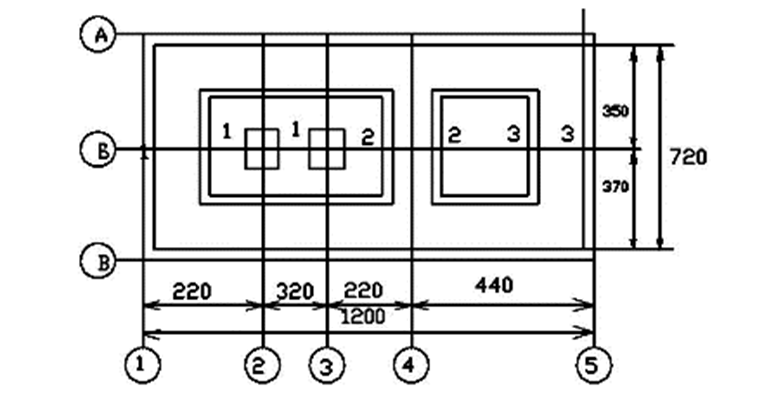

9-маруза Мавзу: Лойиҳани геодезик тайёрлаш
Иншоот лойиҳаси. Инженерлик иншоотлари қурилиши ҳар томонлама Қидирувлар асосида
ишлаб
чиқилган ишчи чизмалари лойиҳаси асосида амалга оширилади. Лойиҳани жойга кўчириш учун зарур
бўлган асосий ҳужжатлар қуйидагилардан иборат:
Иншоотнинг бош плани-1:500- 1:2000 масштабда тузилган бўлиб, топографик асосда
барча
лойиҳавий иморатлар, бош нуқталарнинг лойиҳавий координаталари ва характерли текисликларнинг
отметкалари кўрсатилади;
Ишчи чизмалар-йирик масштабларда иншоотнинг барча қисмлари планлари, қирқимлари
ва
профиллари берилади;
Вертикал текислаш лойиҳаси-1:1000-1:2000 масштабда тузилган бўлиб, жойнинг табиий
рельефини лойиҳавий юзага ўзгартириш лойиҳаси ҳисобланади, унда:
Квадрат ёки тўртбурчак учларининг лойиҳавий ва ишчи отметкалари берилади. Ер ишлар
картограммасида ўйилма ва кўтарма ҳажмлари келтирилади;
Чизиқли иншоотларнинг бўйлама ва кўндаланг профиллари- 1:20001:5000 горизонтал
масштабда ва
1:200- 1:500 вертикал масштабда берилади;
Қурилиш майдонининг геодезик асослаш схемаси, геодезик белгилар
схемалари, координата ва отметкалар ведомостлари келтирилади.
Лойиҳани жойга кўчириш учун қуйидаги тартибда геодезик ишлар
амалга оширилади:
а) лойиҳани аналитик ҳисоблаш;
б) ишчи чизмаларни тузиш;
в) геодезик ишларни бажариш лойиҳасини ишлаб чиқиш.
Лойиҳани жойга кўчириш, иншоотни лойиҳалаш усулига боғлиқ бўлиб, бу усуллар
қуйидагилардан
иборат: аналитик, график-аналитик ва график.
Аналитик усулда барча лойиҳавий маълумотлар математик ҳисоблашлар
орқали топилади.
Кўпчилик ҳолатда график-аналитик усул қўлланилади. Бунда бошланғич маълумотларнинг бир
қисми график усулда, қолган маълумотлар эса аналитик усулда аниқланади.
Лойиҳани аналитик ҳисоблаш. Лойиҳани жойга кўчириш учун барча геометрик
элементлар ўзаро
ва
жойдаги мавжуд бинолар билан математик боғланган бўлиши керак.
Аналитик ҳисоблашда лойиҳавий ўлчамлар ва бурчаклар ёрдамида бино
ўқлари ва қизил чизиқлар кесишиш нуқталарининг координаталари ёки бошланғич координаталар
ёрдамида томонлар узунликлари ва қайрилиш бурчаклари ҳисобланади. Трассада тўғри ва эгри
чизиқ элементлари, лойиҳавий баландликлар ва нишабликлар аниқланади.
Тўғри ва тескари геодезик масалалар, иккита чизиқ кесишиш нуқтасини
аниқлаш, қайрилмаларни асосий элементларини ҳисоблашлар лойиҳани аналитик ҳисоблашда
ечиладиган андазавий (типик) геодезик масалалар ҳисобланади.
Лойиҳани геодезик боғлаш. Лойиҳани геодезик боғлаш деб, бинонинг бош ўқини жойда
режалаш учун
зарур бўлган геодезик маълумотларни ҳисоблаб топишга айтилади.
Бино ва иншоотларни таъмирлаш ва кенгайтиришда бу бино ўқларидан мавжуд биноларгача
бўлган масофалар боғлаш элементлари ҳисобланади
(1а-расм). Режалашни текшириш учун ҳеч бўлмаганда битта асосий нуқта майдонда мавжуд бўлган
геодезик пунктга боғланади. Қурилган бинолар мавжуд бўлмаган майдонларда режалаш элементлари
сифатида геодезик асос пунктларидан фойдаланилади (1б-расм).
Геодезик ишларни амалга ошириш лойиҳаси.Геодезик ишларни амалга
ошириш лойиҳаси қурилиш ва монтаж ишларини ўз вақтида геодезик маълумотлар билан таъминлаш
учун тузилади.

1-расм. Лойиҳани геодезик боғлаш.
Геодезик ишларни амалга ошириш лойиҳасини таркиби қуйидагилардан иборат:
1. Қурилиш майдонида геодезик ишларни ташкил этиш. Иш бажариш технологияси ва тақвим
режа.
Геодезик асбоблар билан таъминлаш графиги. Геодезик ишларни бажариш схемаси.
2. Асосий инженер-геодезик ишлар. Планли ва баландлик режалаш асосини барпо қилиш
схемаси.Планли ва баландлик асоси барқарорлигини
назорат қилиш.
3. Геодезик режалаш ишлари. Иншоотнинг бош ўқларини режалаш. Иншоотнинг қурилиш-монтаж
ишлари босқичи бўйича мукаммал режалаш. Ижроий план олиш.
4. Конструкция ва қурилмаларни геодезик ўрнатиш. Монтаж ўқларини геодезик режалаш ва
маҳкамлаш. Конструкцияларни планли, баландлик бўйича ва тик ўрнатиш.
5. Иншоотларнинг ўзгариши (деформацияси)ни кузатиш. Аниқликни асослаш. Кузатиш
усуллари.
Геодезик асос. Кузатиш белгиларини жойлаштириш схемаси. Кузатиш даври. Ҳисобот
ҳужжатлари.
Режалаш чизмалари. Иншоотнинг режалаш чизмасида бино ва иншоотларнинг бош, асосий ва
оралиқ
ўқлари ифодаланган бўлиб, бу ўқларнинг фазовий ҳолатини аниқловчи аналитик маълумотлар ва у

2-расм. Режалаш чизмаси
Чизмада ўқлар орасидаги барча масофалар кўрсатилган. Иншоотнинг умумий ўлчами унинг
алоҳида ўқлари орасидаги масофалар йиғиндисига тенг бўлиши керак.